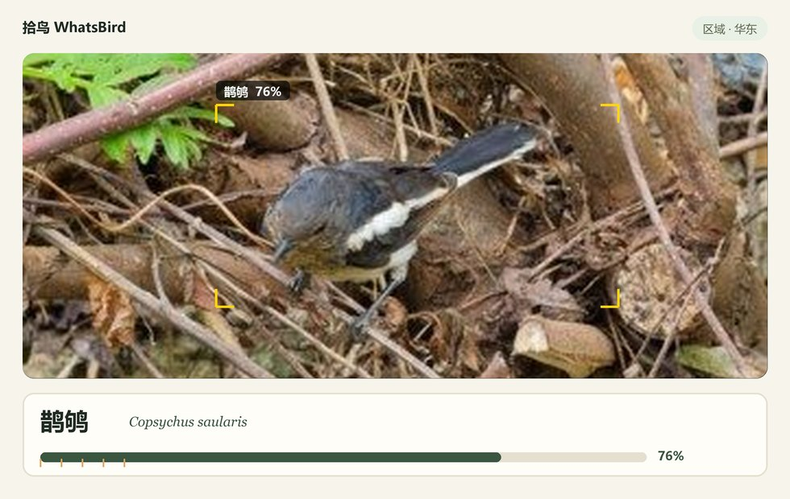

Android · 识别全程离线 · 无账号 · 无广告
举起手机对准鸟
WhatsBird 告诉你它是什么
相机实时帧分析，端侧 AI 当场报出中文名、学名与置信度，并按所在地区和季节重排候选。 照片和观测记录只写本机——飞行模式下也能用。
直链 GitHub Release 资产；正在核对最新版…
⚠️ 只支持 64 位设备（arm64-v8a）——2016 年以后的手机基本都是。 32 位老机与 x86 模拟器请从源码构建。
核心体验就这三屏
装完打开就是取景器——没有首页、没有菜单、没有登录。认出来 → 记一笔 → 点亮图鉴， 全程离线。下面是真机截图（2026-10-12 用 adb 从手机上抓的 v1.0 版）。



识别状态示意
黄框是检测器锁定的目标，下面的卡片是聚合后的身份：中文名、学名、置信度， 右上角是当前路由的区域模型。
这张是合成演示图，不是 App 实拍。 底图是样张照片，检测框、物种名和 76% 的置信度是按设计规范画上去的—— 真机运行时这几个值由端侧模型给出。离线小模型认错很正常，所以记录页可以改判。
真识别长什么样？看右边那只红耳鹎——真机记录：2026-10-05 在华南区 识别并记下的，图上是当时的框选图。

两件没在图上的：非鸟拒识门——独立的拒识分类器挡住非鸟目标，抑制误检； 离线逆地理——内置行政区划边界，无网也能把经纬度解析到区县。
怎么装
- 手机浏览器打开本页，点上面的「下载 APK」。约 119 MB，建议连 Wi-Fi。
- 允许安装未知应用。 下载完浏览器会拦一下，点「允许」——授权只给浏览器或文件管理器，不是全系统。
- 装。系统安装器点「下一步 → 完成」，无 root、无其他权限申请。
- 打开。首次会要相机权限。模型权重全在包里，装完断网也能用。
电脑上下载再传到手机？把 APK 通过数据线 / 网盘传到手机，用文件管理器点开， 同样需要允许「安装未知应用」。已经装过 v1.0 的话直接装新包即可升级，观测记录与图鉴进度都会保留。
确认你装的是我发的包
119 MB 的下载走公网，值得花十秒核一下。页面上的两个指纹都来自 GitHub Release 的资产摘要， 随每次发版更新。
3f90c3c051b60909eaadc5ef9df15efe2a7801403ce0b7f4aee3fd1e9a8b5fb9
711F0F9398D2803DB4CD8C4800CB7BCB5F3AAFB3DC6F6549F9FBDA448DC68A76
证书指纹是长期不变的——它等于这个 App 的「发布者身份证」。以后任何一版， 只要证书指纹还是这一串，签名就是同一家签的。
certutil -hashfile WhatsBird-v1.0-arm64-v8a.apk SHA256shasum -a 256 WhatsBird-v1.0-arm64-v8a.apk你的照片去哪儿了
- 照片与观测记录只写本机（
files/records/+ Room），没有上传接口。 - 定位用于地理先验与记录坐标，可关闭；无定位时先验退化为月度均值。
- 地址解析走内置离线区划，不走任何第三方地理服务。
- 导出的 CSV 由你自己选保存位置，App 不申请存储权限。
许可
- 源代码：Apache License 2.0
-
模型权重与数据资产：大部分同为 Apache-2.0（含商用），两项例外——
protection.json的 IUCN 字段仅限非商业、admin_county.ndjson来源条款未明确授予再分发许可。 完整声明见 LICENSE-MODELS.md。 - 第三方组件：完整清单与商用授权结论见仓库里的
docs/legal/LICENSES.md。
这是个免费的旁路分发渠道：不经应用商店，所以没有商店审核替你把关。 装之前请核对上面的签名证书指纹，别从来路不明的镜像下包。
版本记录
正在读取 GitHub Release…